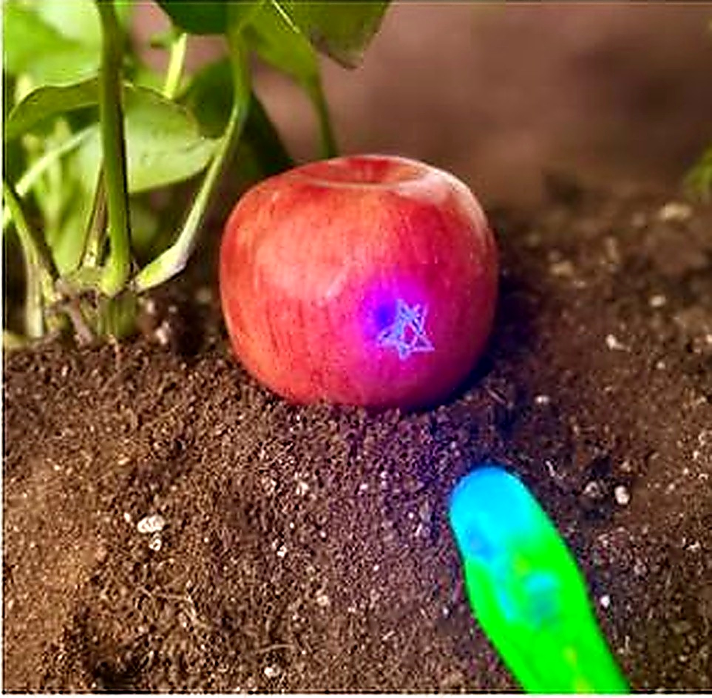
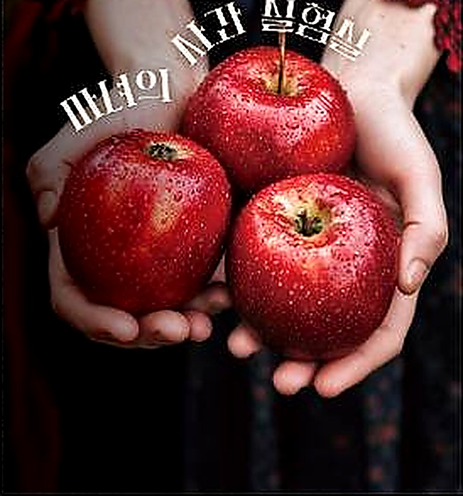
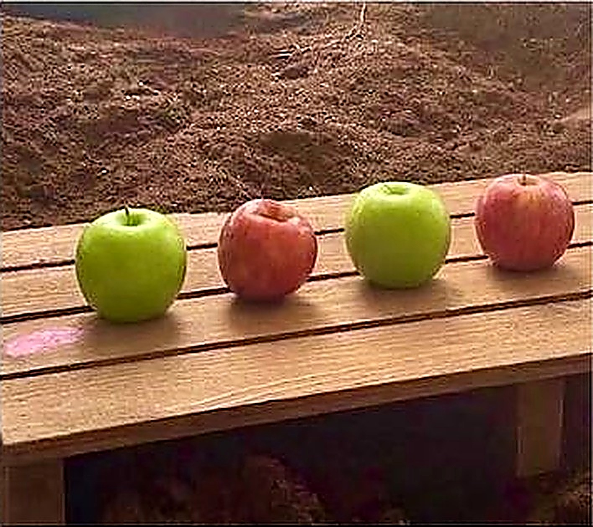
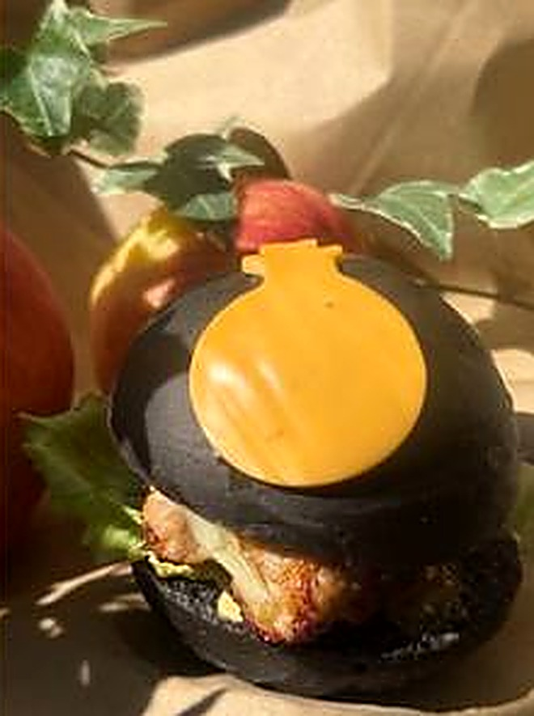

마녀가 잠든 틈, 백설공주를 위해
마녀의 실험 노트를 펼쳐요.
추운 계절을 지나 더 달콤해진
사과의 비밀을 찾아 나서는 가을.
진짜 사과나무를 관찰하며 사과를 직접 만나고, 숲 속 흙에 숨어 반짝이는 수상한 사과를 찾아 나섭니다. 손전등을 비추자 드러나는 낯선 빛 — 이 사과, 정말 마녀의 것일까요?

추운 계절을 지나 더 달콤해진 사과의 비밀을 알아보고, 초록과 빨강 사과가 번갈아 놓인 패턴 암호를 풀어봅니다.
패턴 사과 암호를 풀어야 잠든 마녀 몰래 백설공주를 구할 수 있어요.
엄마 아빠도 어릴 적 마음 졸이며 읽었던 백설공주 이야기 —
오늘은 우리 아이가 그 이야기 속으로 들어가,
사과 안에 숨은 진짜 가을의 비밀을 만납니다.


10월 28일 ~ 11월 15일
선예약 준비 중 →